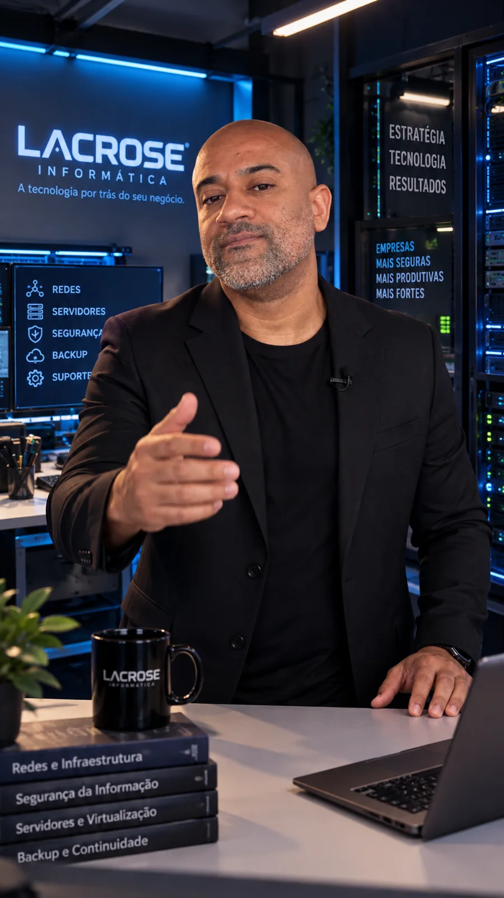
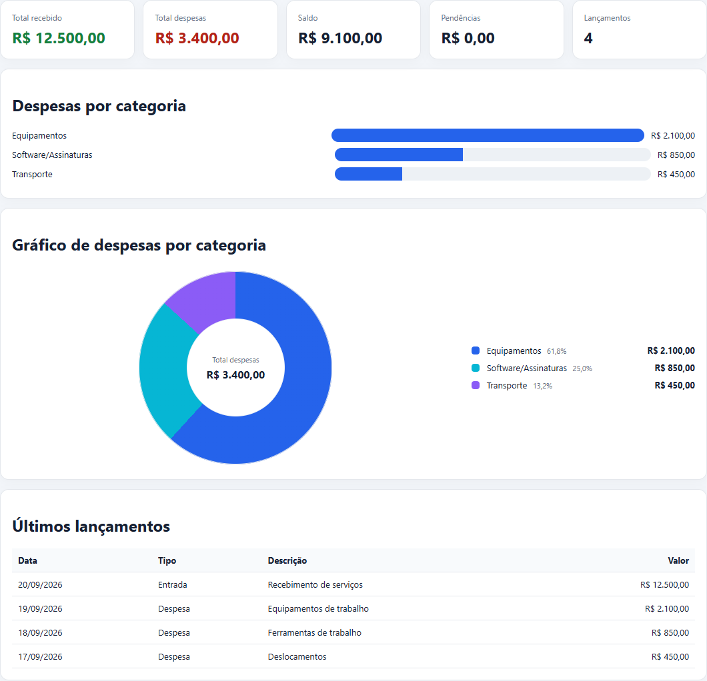

Infraestrutura
& Redes
Ambientes estáveis, organizados e preparados para crescer sem improviso.
MikroTik · Wi‑Fi corporativo · VLAN · Servidores
Tenho um problema de rede ou TI ↗LACROSE TECNOLOGIA · POR IGOR LACROSE
A Lacrose entende o desafio da sua empresa antes de indicar a ferramenta. Infraestrutura, segurança, software sob medida e automação com IA conectados à realidade do seu negócio.

Tecnologia, visão de negócio e proximidade.
01 / SOLUÇÕES EMPRESARIAIS
O ponto de partida é sempre o desafio da empresa. A tecnologia entra depois, como parte da solução.
Ambientes estáveis, organizados e preparados para crescer sem improviso.
Controle de acesso, segmentação, proteção de dados e continuidade da operação.
Sistemas, aplicações e experiências digitais construídas para a rotina real da empresa.
02 / AUTOMATIZAR O QUE CONSOME TEMPO
Automação empresarial não é “colocar um chatbot”. É conectar dados, regras, pessoas e ações em um fluxo que funciona.
Quando uma ferramenta pronta não atende, desenhamos a solução a partir do processo, das pessoas e do resultado esperado.
Quero desenvolver uma solução ↗Lead recebido → qualificação → orçamento → follow-up. E-mail → classificação → tarefa. Documento → extração → cadastro. Sempre com regras, auditoria e aprovação quando necessário.
Quero automatizar um processo ↗03 / AGENTE COMERCIAL LACROSE · PROTÓTIPO NAVEGÁVEL V2
Esta versão demonstra a experiência planejada com conversa livre, respostas rápidas e seleção múltipla. A conversa é simulada no navegador; ainda não utiliza API de IA nem envia dados reais.

Protótipo local. Nenhuma mensagem desta demonstração é enviada à Lacrose. Na versão real, dados de contato só serão usados para retorno comercial mediante consentimento.
04 / DA IDEIA À FERRAMENTA
Projetos próprios também servem como laboratório para experiências, produtos e modelos de entrega.
Mais clareza sobre
o seu dinheiro.
Receitas, despesas, relatórios e gráficos por categoria em uma ferramenta de controle financeiro.

05 / QUEM ESTÁ POR TRÁS DA LACROSE
Sou Igor Lacrose.
A Lacrose Tecnologia é a minha marca profissional.
Minha trajetória em tecnologia começou em 1999. Reúno experiência em redes e infraestrutura, liderança técnica e certificação MTCNA, conectando essa base ao desenvolvimento de soluções e à inteligência artificial.
Meu trabalho começa por entender como sua empresa funciona. A partir daí, planejo e construo soluções que conectam a operação, protegem os acessos, automatizam processos e simplificam a rotina.
Você conversa diretamente comigo: da primeira necessidade à definição do projeto.
Conte o desafio da sua empresa ↗06 / DO PROBLEMA À SOLUÇÃO
Conhecer a operação, o problema, o impacto e o que precisa mudar.
Definir a solução, o escopo, as prioridades, os riscos e os próximos passos.
Construir, integrar, testar, orientar o uso e acompanhar a evolução.
Suporte empresarial, assistência técnica, manutenção, backup e recuperação, monitoramento preventivo e contratos mensais conforme a necessidade.
Tenho um problema agora ↗ATENDIMENTO DIRETO
O agente ajuda no diagnóstico. Se preferir, fale diretamente com Igor Lacrose.